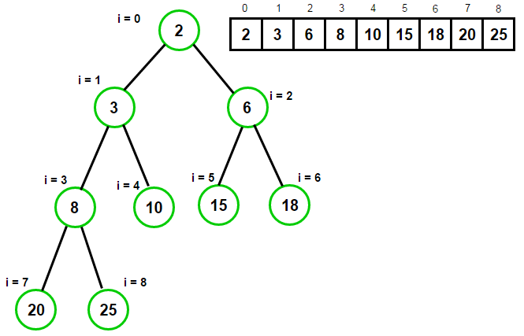

Introduction
Both heap sort and priority queue use the same data structure of heap. A heap is a tree structure based on array, where a parent value always greater than or equal to children (max-heap). (min-heap: parent is smaller than or equal to all children)
min-heap
Difference
heapsort: the input of heapsort is an array, we need to heaify the entire array. During heaification, the size of array is fixed.
priority queue: maintaining the heap as new elements are inserted.
Runtime
Because heap is always a complete binary tree, heapsort is O(nlgn). QuickSort on average is O(nlgn), but worst case can be O(n^2).